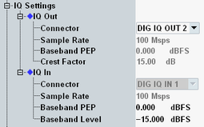

The parameters in this section configure the I/Q output paths and/or the I/Q input paths. The settings are relevant for external fading scenarios and for the "1CC - IQ Out, RF In - 1x1" scenario. Only for these scenarios, the section is present.
Depending on the scenario, the section configures only one I/Q output path or one, two or four pairs of input and output paths. For carrier aggregation scenarios, you can configure the settings per component carrier.
If you use the scenario "1CC - IQ Out, RF In - 1x1", specify the external delay of the test setup in the setup dialog. This setting allows the "LTE Signaling" application to compensate a time delay in the output path.
See also: "Digital IQ"

Select the output connector. The input connector depends on the output connector and is displayed for information.
The DIG IQ connectors are on the rear panel (if an I/Q board is installed).
Remote command:Configured via the scenario selection command, see "Scenario Selection and Signal Routing".
The used sample rate is displayed for information. The value is fixed.
Configure the connected instrument accordingly (baseband input settings and digital I/Q output settings).
Remote command:Indicates the peak envelope power of the baseband signal as dB value relative to full scale. "Full scale" in this case corresponds to the maximum representable amplitude of the I/Q samples.
Use the displayed output PEP value to configure the baseband input of the connected instrument.
Configure the input PEP so that it matches the baseband output of the connected instrument.
Remote command:Indicates the crest factor of the baseband signal, i.e. the ratio of peak to average baseband power. The average power is calculated for time intervals with active downlink traffic channel timeslots only.
Use the displayed crest factor value to configure the baseband input of the connected instrument.
Remote command:Indicates the nominal RMS level of the baseband signal during a call (connection established).
Configure the baseband level so that it matches the baseband output of the connected instrument.
Remote command: